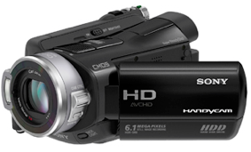
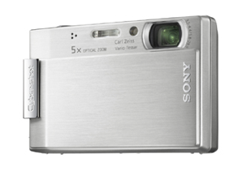
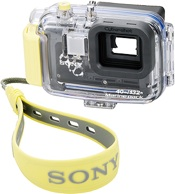
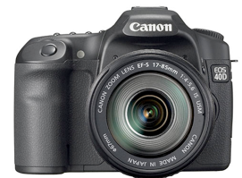
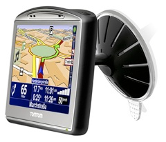
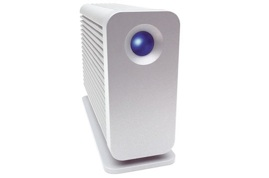
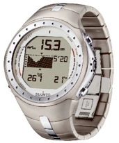

Det er jo ikke ligegyldigt, hvad for noget grej, man har med på så lang en tur. Vi har forberedt os meget grundigt, og har valgt nogle rigtig lækre ting til vores rejse.
Her kan du se et udpluk af de ting vi har valgt at tage med.

Det er jo ikke ligegyldigt, hvad for noget grej, man har med på så lang en tur. Vi har forberedt os meget grundigt, og har valgt nogle rigtig lækre ting til vores rejse.
Her kan du se et udpluk af de ting vi har valgt at tage med.




Sony HDR SR8E
Det her videokamera har vundet en EISA pris for bedste HD videokamera. Det har en harddisk på 100 GB, og kan derfor rumme rigtig mange timers video i utrolig flot kvalitet. Derudover tager det stillbilleder i en opløsning på 6.1 Megapixels.
Sony DSC T100
Markedets måske bedste lommekamera til de situationer, hvor vi ikke slæber det store med. Optager glimrende video og er meget nemt at betjene. Zoomen går ind i kameraet, så det er ikke så sårbart når det ryger på gulvet. Og så kanman få et rigtig godt undervandshus til
Sony Undervandshus
Et rigtig godt hus hvor alle funktioner er tilgængelige under vandet. Går ned til 40 M. og vil blive flittigt brugt på vores mange dyk.
Canon EOS 40D
Markedets formentlig lækreste SLR kamera i øjeblikket. Det tager billeder i 12 MegaPixels, er utrolig hurtigt og har live view funktion. Et stort kamera, men igen en garant for at få nogle gode billeder i kassen
Apple Mac Book
Apples bærbare er lidt stor i forhold til det jeg helst havde ville have med. Men til gengæld er Apples software uovertruffen. Dette website laves i iWeb, og hostes via en .Mac account. Derudover publicerer vi billeder fra iPhoto og video fra iVideo 08. For at kunne drive disse applikationer, er den opgraderet til 2 Gb Ram.
LaCie Little Big Disk
Da vi regner med at lave en del video og vi gerne vil være sikre på at have en backup, tager vi en lille 200 Gb ekstern harddisk med.
Valget er faldet på denne, da den ikke kræver ekstern strømforsyning.

TomTom 720
Tom Toms nyeste topmodel er en helt fantastisk GPS´er. Vi skal køre en del rundt i Australien og desuden 2 måneder i New Zealand, og da Tom Tom netop har lanceret kort netop til New Zealand, er jeg sikker på at vi bliver rigtig glade for at have denne med.

Suunto D9
Suunto laver nogen af verdens bedste dykkerure og D9 er deres topmodel. Det er verdens første dykkerur, der både rummer et digital kompas og trådløs overførsel af tankdata. Man skal jo forkæle sig selv lidt en gang imellem, og jeg glæder mig rigtig meget til at dykke med det her instrument.
